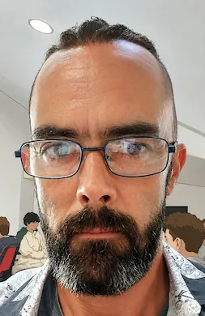

Je conçois des sites web modernes, mais aussi des applications et outils web sur mesure, pensés pour répondre aux besoins
concrets des professionnels. Mon objectif : transformer une idée, un besoin ou une problématique en une solution simple, efficace et accessible.
Mon expérience de plus de 20 ans dans le secteur du bâtiment m’a appris à comprendre les réalités du terrain, les contraintes d’une entreprise
et les enjeux de ses clients. Aujourd’hui développeur web, je mets cette double compétence au service de vos projets : un regard
technique, mais aussi une vraie compréhension du métier et de ses besoins.
Développeur web & Accompagnement numérique
Mon véritable atout ? Je ne découvre pas le monde de l’entreprise avec le développement web. Après plusieurs années dans le secteur du bâtiment,
notamment en bureau d’étude, en administration des ventes et aux côtés de la direction d’agence, j'ai appris à comprendre les besoins d'un client,
les contraintes d'une entreprise et surtout les enjeux commerciaux qui se cachent derrière un projet. Aujourd'hui, j'associe cette expérience à
mes compétences de développeur pour créer des solutions qui ne se contentent pas d'être belles : elles doivent vous aider à être trouvé, à être
compris et surtout à ne pas laisser passer une opportunité.